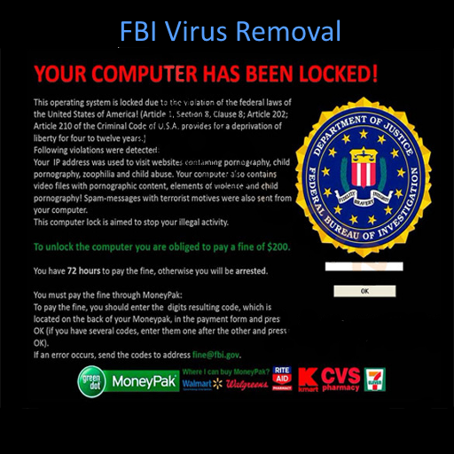
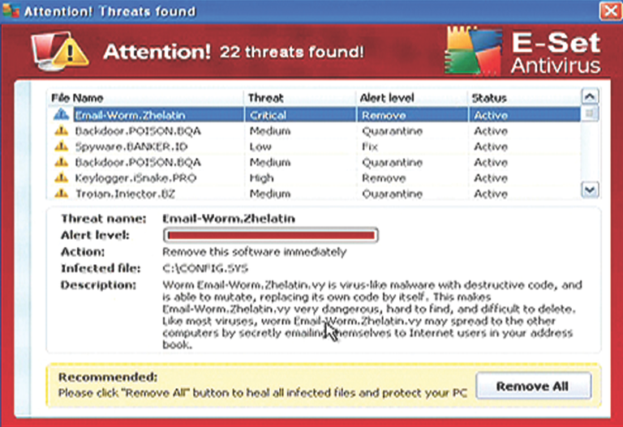

A WARNING ON YOUR SCREEN IS NOT AN EMERGENCY.
Stop. Don't call the number. Don't click the button. Don't give anyone remote access. A webpage can make an alarming message look very real. It can display government logos, play an alarm, claim your computer has been infected, tell you that your bank account is in danger, or threaten you with arrest. Don't panic. These are common scare tactics used by scammers to make you act before you have time to think.
Recognizing Suspicious and Scam-Like Behavior
Not every security threat arrives as an obvious scam. Some of the most convincing ones are designed to look like legitimate warnings from Microsoft, the FBI, the IRS, your antivirus software, or another organization you recognize.
One of the best ways to protect yourself is to recognize the warning signs before you click, call, provide information, or give someone remote access to your computer.
When Your Computer Suddenly Tells You to Call Someone
One particularly common scam involves a web page that suddenly displays a loud or alarming warning claiming that your computer has been infected, compromised, or involved in illegal activity.
The page may claim to be from a government agency, Microsoft, an antivirus company, or another trusted organization. It may display a telephone number and instruct you to call immediately for assistance.
These pages are designed to frighten you into acting before you have time to think about what you are seeing.
The Fake FBI Warning
A particularly aggressive example is the fake FBI warning page. The page may display an alarming message claiming that your computer has been associated with illegal activity and that you must contact a telephone number immediately.

The page may also make it unusually difficult to leave. It may open repeatedly, display additional warnings, or attempt to prevent you from navigating normally.
The important thing to remember is that simply seeing such a page does not mean the FBI has contacted you, that your computer has been seized, or that you are in legal trouble.
Do not call the number or click any links or buttons displayed on the warning. Do not provide personal information, payment information, passwords, or remote access to your computer.
Fake IRS Warnings
Similar scams have been designed to look like warnings from the IRS. These pages may claim that you have an outstanding tax problem, that legal action is imminent, or that you must call a particular number immediately.
The goal is the same: create fear and urgency so that you react before you stop to question whether the warning is legitimate.
A web page appearing on your screen does not establish that the IRS or another government agency is actually contacting you.
Why These Pages Are So Effective
Scam pages frequently combine several techniques at once:
- Alarming messages
- Official-looking logos and graphics
- Warnings about legal consequences
- Countdown timers or other artificial urgency
- Telephone numbers prominently displayed on the screen
- Messages claiming that your computer is infected
- Attempts to prevent you from easily leaving the page
- Instructions to contact a supposed technician immediately
None of these things, by themselves, prove that a warning is legitimate. In fact, the combination of fear, urgency, and a demand that you call a particular telephone number should be treated as a significant warning sign.
Be Careful With Unexpected Antivirus Warnings
Another common tactic is the use of questionable antivirus or security software. A program or web page may claim that your computer has dozens, hundreds, or even thousands of security problems and immediately offer to fix them.

Some legitimate security programs can certainly detect large numbers of problems. The concern is when software appears unexpectedly, generates alarming messages, or pressures you into purchasing a product or calling a telephone number.
Be especially cautious when a security warning originates from a web page rather than from security software you knowingly installed.
How to Recognize a Suspicious Website
A website can look surprisingly legitimate while still being fraudulent. Logos, colors, photographs, and official-looking language can all be copied.
Look beyond the appearance of the page.
- Look carefully at the website address.
- Be suspicious of unfamiliar or unusual domain names.
- Watch for misspelled words or awkward language.
- Be cautious when a site creates an immediate sense of panic.
- Be suspicious when a website tells you to call a specific number.
- Do not assume that a logo or government seal makes a site legitimate.
- Be cautious when a site asks for personal or financial information unexpectedly.
- Do not give remote access to someone simply because a web page told you to.
Don't Let a Web Page Make You Panic
Perhaps the most important thing you can do when confronted with a frightening warning is to stop and think.
Scammers want you to believe that you have only seconds to act. You usually don't.
Close the browser if you can. If the page is preventing you from navigating normally, restarting the computer may be appropriate. Do not call the telephone number displayed by the warning simply because the page tells you to.
If you are unsure whether a warning is legitimate, seek help from someone you trust or contact the organization through a telephone number or website that you independently know to be legitimate.
📞 Example: The Emergency That Isn't an Emergency
In this example, the scammers contact a woman and tell her that her husband is undergoing surgery and that payment is immediately required in order for the operation to continue.
The situation is designed to create exactly the kind of emotional response scammers depend on: fear, urgency and a demand for immediate payment. The caller wants the victim to react before she has time to stop and verify what is actually happening.
In this case, the woman quickly realizes that the call is a scam. Rather than becoming frightened, she finds the situation humorous and eventually begins giving the scammers deliberately false information while laughing about it when they cannot hear her. Do not attempt this yourself. Simply hangup.
What Should You Notice?
While this call is humorous it contains examples of what scammers say. Do not attempt to do the same thing as the lady in the video
- An unexpected emergency: The caller presents a situation that supposedly requires immediate attention.
- Fear: The story involves a loved one's health and potentially serious consequences.
- Urgency: The victim is told that something must happen immediately.
- Money: The emergency ultimately becomes a demand for payment.
- No opportunity to verify: The scam depends on the victim accepting the caller's story instead of independently confirming what is happening.
Don't use the telephone number or contact information provided by the caller. Contact the family member, hospital, bank or other organization directly using information you already know to be legitimate.
You don't have to determine whether the caller is a professional scammer before taking action. If something doesn't make sense, slow down and verify it.
A Simple Rule to Remember
If a web page is trying to frighten you into calling someone, paying someone, or giving someone access to your computer, stop before you do anything.
Legitimate security problems should be investigated. They should not require you to surrender control of your computer simply because a frightening message appeared on your screen.
When in doubt, ask someone before you click. There is no shame in asking for help. A five-minute conversation with someone you trust can be much easier than recovering from identity theft, financial loss, or a compromised computer. If something doesn't feel right, stop. You don't have to figure it out by yourself.